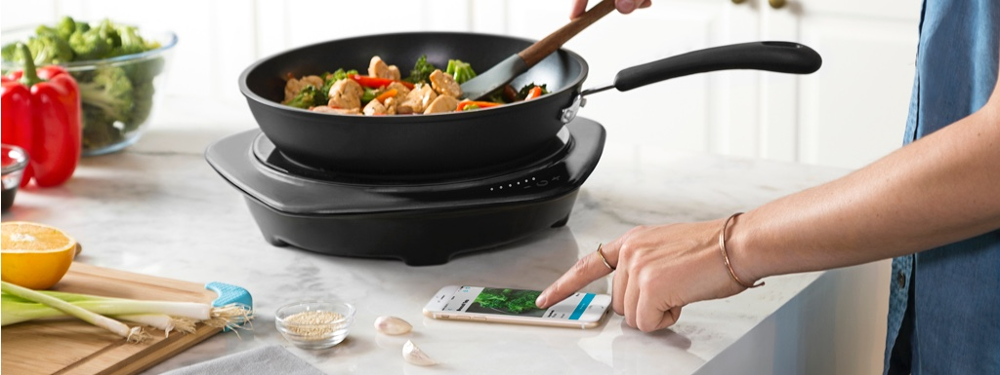
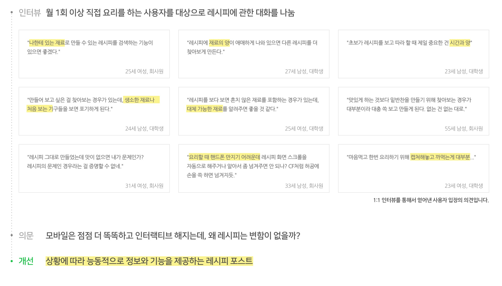
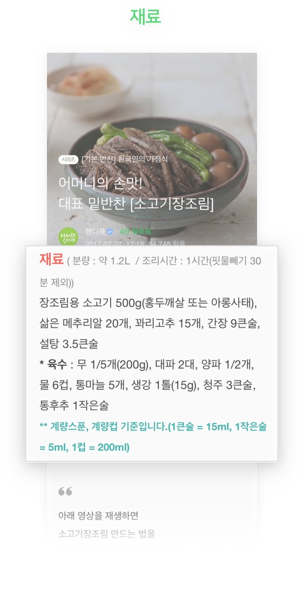
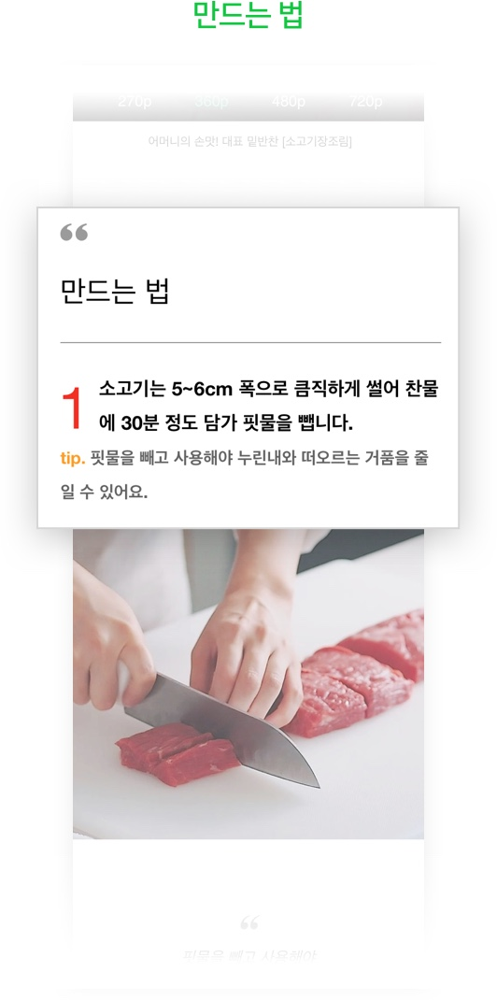
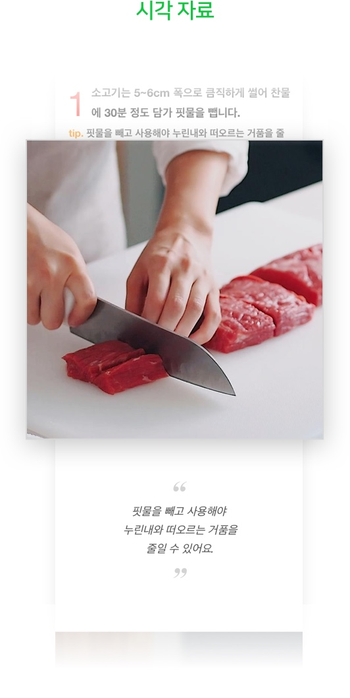
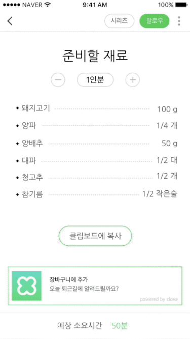
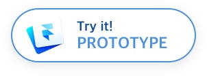
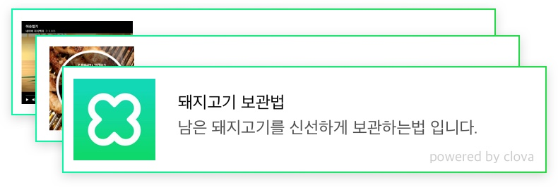

NAVER Post 레시피 UX
네이버에 레시피를 검색해서 요리를 해본적 다들 한번쯤은 있을거라 생각합니다.
그런데 무심코 지나쳤던 이 상황에서 문득 한가지 의문이 떠올랐습니다. IT기술은 짧은 시간동안 급격히 발전했지만, 왜 레시피를 전달하는 방법은 그대로일까?
USER RESEARCH
레시피/푸드 분야는 내용이 일관적인 편이며 전달하는 양식이 매우 비슷하다는 특징을 가지고 있습니다. 또한 구독자가 포스트를 읽는 목적이 명확한 분야입니다.
레시피에 대한 이야기를 나눌 때 포스트의 본질은 유지하며 지금보다 더 다양한 기술의 가능성을 활용할 수 있는 방향 생각해 보았습니다.

RESEARCH
대부분의 레시피 포스트가 비슷한 포맷으로 정보를 담고 있었습니다. 이런 부분을 중점으로 레시피에 특화한 페이지를 설계하고자 했습니다.



CONCEPT
첫 번째 본문 개선은 재료를 표기하는 방식에서 이루어졌습니다. 기존의 본문 화면에서는 재료 양이 고정적인 형태의 정보로 제공되고 있습니다.
요리할 양에 따라 알맞은 재료의 양을 제공하는 방식으로 개선하였습니다. 이후 마이페이지에서 재료로 레시피를 분류하는 작업을 위해서도 필요한 기능입니다.
새로운 재료 템플릿
몇인분의 요리를 할 계획이신가요? 딱 필요한 만큼 알려드릴게요.
#
재료의 양
#
시간과 양
#
캡쳐해놓고 까먹는게 대부분
조절 가능한 재료
필요한 만큼 설정하여여 재료의 양을 계산없이 쉽게 볼 수 있습니다.
필요한 만큼 설정하여여 재료의 양을 계산없이 쉽게 볼 수 있습니다.
복사해서 공유도 쉽게
클립보드에 복사해 가족에게 메시지로 보내거나, 메모장에 붙여넣을 수 있습니다.
레시피 링크도 함께 복사되어 나중에 찾아볼 수 있습니다.
클립보드에 복사해 가족에게 메시지로 보내거나, 메모장에 붙여넣을 수 있습니다.
레시피 링크도 함께 복사되어 나중에 찾아볼 수 있습니다.
나만의 비서 Clova
클로바 메모장에 등록하여 퇴근 시간에 맞추어 알려드립니다.
클로바 메모장에 등록하여 퇴근 시간에 맞추어 알려드립니다.


능동적인 정보 제공
시간 보랴 검색하랴 몸은 하나인데 할 일은 너무 많았죠? 이젠 필요한 것들 클로바가 준비할게요.
#
시간과 양
#
생소한 재료나 처음보는 기구
#
대체 가능한 재료
사진/영상/GIF파일
레시피를 이해하기 쉽도록 다양한 시청각 자료를 제공하는 영역입니다.
레시피를 이해하기 쉽도록 다양한 시청각 자료를 제공하는 영역입니다.
요리방법 설명
텍스트로 이루어진 영역입니다. 요리방법을 서술하며 스크롤이 가능한 영역입니다.
텍스트로 이루어진 영역입니다. 요리방법을 서술하며 스크롤이 가능한 영역입니다.
Clova Assistant
상단의 시청각 자료와 본문의 텍스트를 분석하여 사용자가 궁금할 법한 정보나 필요한 기능을 제공하는 영역입니다.

상단의 시청각 자료와 본문의 텍스트를 분석하여 사용자가 궁금할 법한 정보나 필요한 기능을 제공하는 영역입니다.
에디터의 냉장고 (글쓴이 마이페이지)
에디터의 냉장고에서 재료로 분류된 레시피들을 확인하세요. 이젠 집에 있는 재료로 저녁 준비해 보아요.
#
나한테 있는 재료
#
대체 가능한 재료
에디터의 냉장고
‘냉장고’ 탭에서는 에디터의 레시피들이 어떤 재료들을 사용하여 만들어졌고,어느 재료를 가장 많이 사용하였는지 한눈에 확인할 수 있습니다.
‘냉장고’ 탭에서는 에디터의 레시피들이 어떤 재료들을 사용하여 만들어졌고,어느 재료를 가장 많이 사용하였는지 한눈에 확인할 수 있습니다.
재료로 레시피 검색
원하는 재료를 검색하면 그 재료를 사용한 레시피를 찾을 수 있습니다. 여러 재료를 검색이 가능하기 때문에 자신이 가지고 있는 재료로 만들 수 있는 레시피를 찾을 수 있습니다.
원하는 재료를 검색하면 그 재료를 사용한 레시피를 찾을 수 있습니다. 여러 재료를 검색이 가능하기 때문에 자신이 가지고 있는 재료로 만들 수 있는 레시피를 찾을 수 있습니다.
다른 에디터의 레시피 검색
한 명의 에디터가 같은 재료로 만들 수 있는 레시피는 한계가 있습니다. 그 재료를 사용한 다른 에디터의 레시피를 확장 검색할 수 있는 기능입니다.
한 명의 에디터가 같은 재료로 만들 수 있는 레시피는 한계가 있습니다. 그 재료를 사용한 다른 에디터의 레시피를 확장 검색할 수 있는 기능입니다.
*현재 포스트 검색창에 재료를 검색하면 레시피와 관련없는 포스트가 노출됩니다.